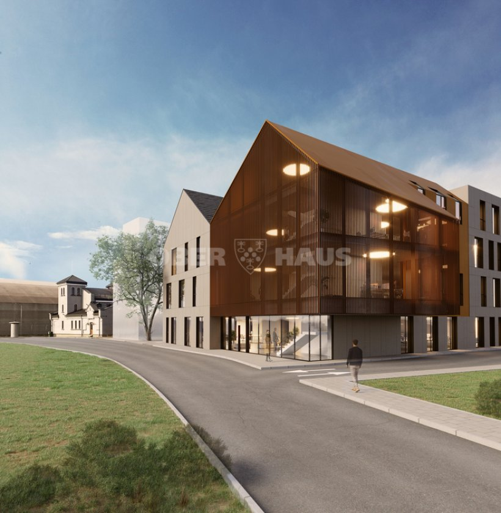

Parduoti
- Objekto paruošimas
- Kainos nustatymas
- Pozicionavimas
- Rinkodara
- Pirkėjų paieška
- Derybos
Aurimas Petrikas · Nekilnojamasis turtas
Padedu NT savininkams, pirkėjams ir investuotojams priimti aiškesnius sprendimus – nuo objekto paruošimo ir pozicionavimo iki derybų bei sandorio užbaigimo.

Apie mane
Dirbdamas su nekilnojamuoju turtu daugiausia dėmesio skiriu ne pačiam skelbimui, o visam sprendimui, kuris veda iki rezultato.
Turiu daugiau nei 20 metų patirties nekilnojamojo turto, bankininkystės ir finansinių paslaugų srityse. Prieš pradėdamas dirbti NT rinkoje vadovavau bankų klientų aptarnavimo padaliniams ir draudimo bendrovės verslo klientų skyriui – atsakiau už pardavimų rezultatus, veiklos organizavimą ir kredito rizikos priežiūrą.
Ši patirtis naudinga iki šiol: didelė dalis NT sprendimų remiasi finansavimu, rizikos vertinimu ir sutarčių sąlygomis, o ne vien objekto nuotraukomis. Verslo administravimo bakalauro studijas baigiau Roberts Wesleyan universitete Niujorko valstijoje.
Nuo 2018 m. vadovauju Ober-Haus Klaipėdos regionui – daugiau nei 25 specialistų komandai, apimančiai NT brokerius ir turto vertintojus. Kuruoju gyvenamojo, komercinio ir nuomos NT veiklą Klaipėdoje bei Palangoje ir dirbu su stambiais verslo bei viešojo sektoriaus klientais.
Man svarbu suprasti kliento situaciją, tikslus ir lūkesčius, įvertinti rinką ir pasirinkti tinkamiausią strategiją. Nesvarbu, ar kalbame apie būsto pardavimą, investicinį objektą, komercines patalpas ar sklypą – kiekvienam sprendimui reikia skirtingo požiūrio.
Vadovaudamas komandoms įsitikinau, kad rezultatas priklauso nuo žmonių. Todėl pagarbus ir dalykiškas požiūris į klientą bei kolegą man yra ne deklaracija, o darbo sąlyga.
Kodėl aš
Penki dalykai, kuriuos gaunate dirbdami su manimi – nepriklausomai nuo to, ar parduodate būstą, ieškote patalpų verslui, ar vertinate investiciją.
Dirbate tiesiogiai su manimi. Sprendimai priimami atsižvelgiant į konkrečią jūsų situaciją, o ne pagal standartinį scenarijų.
Objekto vertė – ne tik skaičius. Svarbu suprasti paklausą, pirkėją, konkurenciją ir tinkamą pozicionavimą.
Siekiu ne tiesiog susitarti, o tinkamai atstovauti jūsų interesams ir pasiekti geriausią įmanomą rezultatą.
Žinote, kas vyksta, kokie yra tolimesni žingsniai ir kodėl priimami konkretūs sprendimai.
Nuo pasiruošimo ir rinkodaros iki derybų, dokumentų ir sandorio užbaigimo.
Sritys
Nuo vieno buto iki komercinio objekto ar plėtros sklypo – skiriasi ne tik objektas, bet ir procesas, pirkėjas bei sprendimo logika.
Patirtis
NT sandoryje retai lemia vien objektas. Dažniausiai lemia finansavimas, sutarties sąlygos, terminai ir gebėjimas suvaldyti procesą tarp kelių šalių.
Bankai ir draudimas
Beveik dešimtmetis bankų sektoriuje ir treji metai draudime. Buvau vienas iš penkių Lietuvos kredito komiteto narių – dalyvavau priimant strateginius kredito sprendimus.
Nekilnojamasis turtas
Gyvenamasis, komercinis ir nuomos NT Klaipėdoje bei Palangoje. Sklypai ir naujos statybos projektai Vakarų Lietuvoje.
Sutartys ir rizikos
Preliminariųjų, rezervacinių ir kitų sutarčių rengimas, notarinių sutarčių peržiūra, juridinių rizikų identifikavimas ir valdymas.
Kainodara ir derybos
Kainodaros formavimas, tikslus rinkos kainos nustatymas ir asistavimas derybose iki galutinio susitarimo.
Nauji projektai
Naujos statybos projektų koncepcijos formavimas, pardavimo strategijos parengimas ir pardavimų valdymas.
Vadovavimas
Vadovauju NT brokerių ir turto vertintojų komandai. Anksčiau – banko padaliniai, pirmavę Lietuvoje pagal pardavimus vienam darbuotojui ir mažiausią skolininkų rodiklį.
Verslas
Įkūriau gintaro dirbinių gamybos įmonę „Auris Amber“ ir sukūriau didmeninio eksporto modelį Artimųjų Rytų rinkoms.
20+
metų NT, bankininkystės ir finansų srityse
25+
specialistų komanda, kuriai vadovauju
Nuo 2018
Ober-Haus Klaipėdos regiono vadovas
LT / EN / RU
darbo kalbos
Geras darbas su NT prasideda ne nuo skelbimo. Jis prasideda nuo supratimo, ko iš tikrųjų reikia klientui.
Aurimas Petrikas
Objektai
Objektai, kuriuos šiuo metu atstovauju. Nematote tinkamo? Dalis sandorių vyksta neviešai – parašykite, ko ieškote.
Investuotojams ir verslui
NT dažnai yra ne tik būstas ar pastatas. Tai kapitalas, investicija, verslo sprendimas arba ilgalaikis turtas.
Jeigu svarstote parduoti, įsigyti ar investuoti į nekilnojamąjį turtą, galiu padėti įvertinti situaciją ir pasirinkti racionaliausią kelią.

Kontaktai
Turite klausimą dėl NT, svarstote parduoti, pirkti ar investuoti? Parašykite – aptarsime.